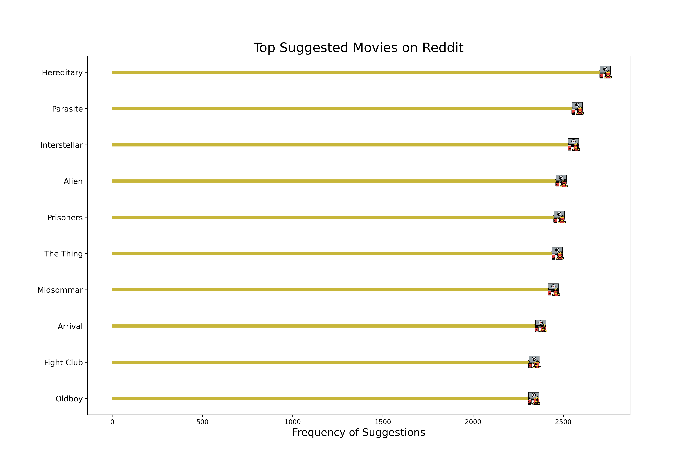
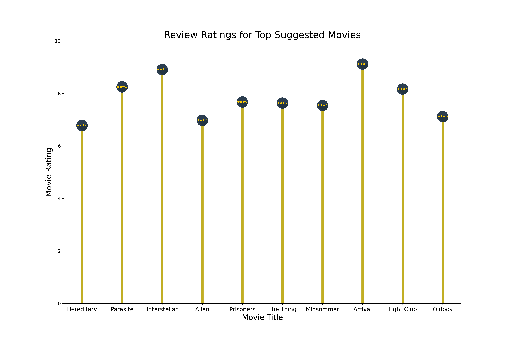
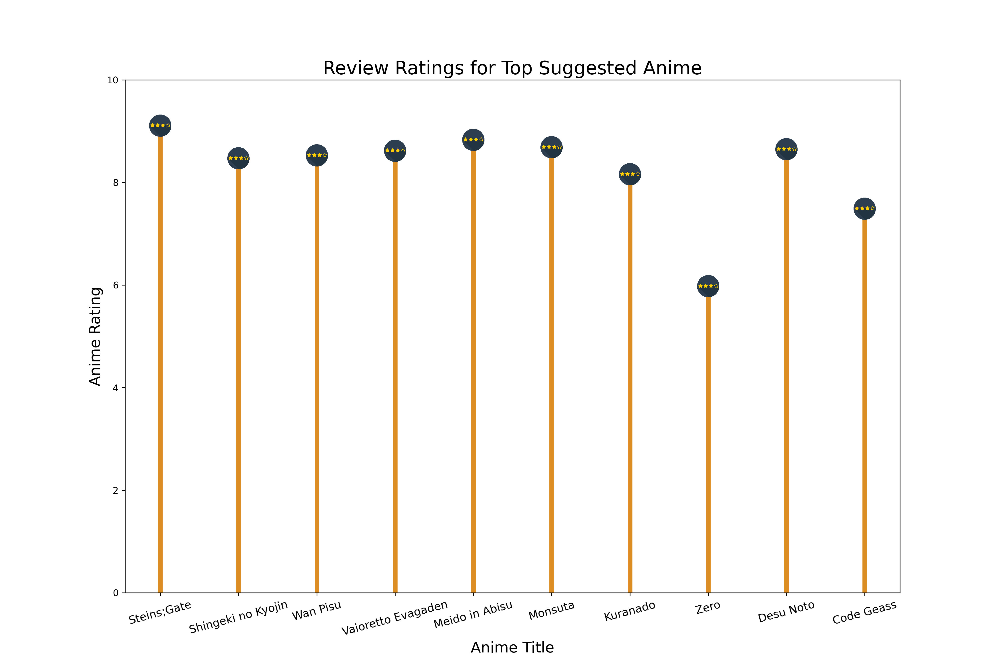

Natural Language Processing - Technical Analysis Report

Comprehensive Analysis Report on Reddit Discussions: Unveiling Trends in Movie Popularity
This analysis aims to discern prevailing trends in Reddit discussions related to movies. The primary goal is to compile a dataset featuring the most talked-about movies on the platform. Subsequently, this dataset will be cross-referenced with our external review data, particularly from platforms like Rotten Tomatoes. The objective is to determine if movies generating the most buzz on Reddit also receive positive critical acclaim or exhibit differing evaluations.
Before delving into detailed text cleaning processes, we conducted a preliminary analysis encompassing both movie and anime-related Reddit communities. Our overarching goal is to ultimately provide insights on Movies, Anime, and TV shows. In this initial phase, we performed a word count analysis on submissions from both movie and anime Reddits. Below are the top words identified, accompanied by their respective counts:
This initial exploration has revealed that discussions on Reddit heavily revolve around users’ favorite anime and movies. To gain deeper insights, our next step involves analyzing the comments more comprehensively to extract the specific names of the most-discussed movies and anime. By doing so, we aim to identify the titles that resonate most strongly within the community, shedding light on the exceptionally popular content among Reddit users.
In our analysis of Reddit comments related to movies, we initially employed TF-IDF vectorization on a DataFrame containing cleaned and tokenized text. While TF-IDF is a powerful technique for understanding the significance of words within individual documents relative to the entire dataset, its application in our specific context has revealed limitations.
TF-IDF is inherently designed to highlight the importance of words in a document set, but its utility in extracting specific movie and anime references from Reddit comments appears to be constrained. Our objective is to identify and extract the most discussed or mentioned movie and anime titles, and for this purpose, alternative methods may prove more effective.

Recognizing the unique nature of our analysis, we have decided to explore alternative approaches that directly cater to the extraction of movie and anime references from Reddit comments. This strategic shift is grounded in the understanding that while TF-IDF is valuable for certain tasks, it may not be the optimal choice for our current goal of pinpointing and analyzing explicit references to movies and anime in the Reddit data.
By adopting alternative methods tailored to our specific objective, we aim to enhance the precision and relevance of our analysis, ensuring a more effective exploration of the most discussed titles within the Reddit community. This adaptive approach aligns our methodology with the intricacies of the content present in Reddit comments, optimizing our ability to uncover and analyze meaningful movie and anime references.
Identifying Top Reddit-Recommended Movies
The social platform Reddit is a treasure trove of public opinion and preferences, particularly when it comes to movie recommendations. To extract the movies, we’ve implemented a data extraction and analysis pipeline to identify the most frequently suggested movies across various Reddit threads.
Methodology:
Named Entity Recognition (NER): NER was applied to extract movie titles from unstructured text in Reddit discussions.
Pattern Matching: Further refinement was achieved through pattern matching techniques to ensure accurate identification of movie titles.
Context Analysis: The context surrounding extracted entities was analyzed to validate the relevance of identified movie titles.
Explode and Aggregate: The data was transformed through the “explode” operation, breaking down entries into individual suggestions. Aggregation techniques were then employed to count the occurresnces of each movie title, providing a quantitative measure. We initiated the process by collecting Reddit posts from threads likely to contain movie suggestions. This involved utilizing Reddit’s API to fetch posts from subreddits renowned for movie discussions. Upon retrieval, the posts underwent a standard preprocessing stage, which included lowercasing, tokenization, and the removal of stop words and punctuation. This step was crucial to prepare the text data for more sophisticated natural language processing (NLP) tasks.
Named Entity Recognition (NER) The cleansed text data was then processed through a Named Entity Recognition (NER) model. NER is an NLP technique that automatically identifies and classifies key information in text, such as the names of people, places, and, pertinent to our task, movies. We utilized a pre-trained NER model tailored to recognize movie titles within a larger corpus.
Text Processing Workflow
- Document Assembler: The initial step involves converting each comment text into a structured document format. This process, facilitated by a Document Assembler, lays the foundation for a systematic and organized analysis.
- Sentence Detector: Following document structuring, the content is segmented into sentences using a Sentence Detector. This step is crucial for breaking down the textual information into manageable units, preparing it for more granular analysis.
- Tokenization: Tokenizer: Sentences are further deconstructed into individual tokens using a Tokenizer. This process is integral to understanding the intricacies of the text at a word level, facilitating a nuanced examination of user comments.
- Word Embeddings Model (glove_100d): To transform tokens into numerical vector representations, we employ a Word Embeddings Model, specifically glove_100d. This model captures semantic relationships between words, enabling a more profound analysis of the comment text.
- NERDL Model (ner_dl): The identified vectors undergo Named Entity Recognition using an advanced NERDL model. This step involves classifying entities within the vectors, distinguishing elements such as persons, organizations, and locations, contributing to a richer understanding of the comment content.
- Entity Chunking: Identified entities are then intelligently grouped into coherent chunks using a NER Converter. This chunking process enhances the organization and structure of the information, revealing patterns and relationships within the identified entities.
- Suggestion Extraction using User Defined Function (UDF): Focusing on entities classified as “PERSON” and “ORG,” a User Defined Function (UDF) is applied to extract suggestions from the identified chunks. This step allows for the extraction of meaningful insights related to individuals and organizations mentioned in the comments.
Pattern Matching In parallel to NER, we employed pattern matching algorithms to capture movie mentions that might not be recognized by NER. Pattern matching utilized a combination of keyword searches and lexical patterns that are commonly associated with movie titles.
- Common Pattern Identification: Utilizing a Regex pattern (pattern = r’(?:“([^"]+)”|([A-Z][a-z](?:+(?:[a-z]++)[A-Z][a-z]))(?: )?)’), we embark on identifying common patterns within the dataset. This pattern is designed to capture both quoted phrases and properly formatted movie titles with their release years.
- Data Refinement using User Defined Functions (UDFs):Stopwords and Single-Letter,Movies Removal Stopwords Exclusion UDF: Applying a User Defined Function (UDF), we meticulously remove movies that consist solely of stopwords. This ensures that the dataset is refined to exclude movies with minimal informational content. Single-Letter Movies Exclusion UDF: Another UDF is employed to eliminate movies with only a single letter in their titles. This step is crucial for maintaining the integrity of the dataset by filtering out entries that may not contribute substantial information or context.
Context Analysis To refine the results further, context analysis was performed. This method assessed the surrounding text of potential movie titles to discern whether the mention was indeed a suggestion. For example, phrases like “I recommend” or “you should watch” preceding a movie title indicated a suggestion.
Data Transformation The identified movie titles were transformed into a structured format suitable for analysis. The transformation involved “exploding” lists of movies found in individual posts into separate records to facilitate counting.
Aggregation Finally, we aggregated the results by counting the frequency of each unique movie title across the dataset. This step was implemented using group-by operations that tallied the number of suggestions per movie. The aggregation stage culminated in a ranked list of movies by the number of times they were suggested. This ranked list provided clear insights into the most popular movie recommendations on Reddit.

Upon analyzing user recommendations on Reddit, “Hereditary” stood out as the most frequently suggested movie. This observation prompted us to delve deeper into whether these highly recommended films were not only popular among users but also well-received in terms of positive sentiment.
To assess this, we turned to the extensive review data available on Rotten Tomatoes. Our goal was to determine if the movies recommended on Reddit also lay up high ratings and positive sentiments from critics and audiences alike. To achieve this, we conducted sentiment analysis on the review data, calculating sentiment scores for each film.
The sentiment analysis allowed us to quantify the balance between positive and negative sentiments expressed in the reviews. Subsequently, we devised a comprehensive rating metric that considered both the sentiment scores and overall sentiment polarity. This approach aimed to provide a nuanced understanding of how well-received the movies were, beyond conventional rating systems. By correlating the recommendations from Reddit with sentiment scores and ratings on Rotten Tomatoes, our analysis sought to reveal whether the most suggested movies on the platform not only captured the attention of users but also resonated positively with a broader audience, shedding light on the intersection of user preferences and critical acclaim.
Sentiment Analysis of Rotten Tomatoes Movie Reviews: Insights and Trends
Our journey into sentiment analysis commenced with the comprehensive collection of review text for every movie listed on Rotten Tomatoes. This comprehensive dataset was the foundation for our analysis, containing a wide range of opinions from both expert critics and a variety of moviegoers.
Data Cleaning Process
Document Conversion: To impart structure to the amassed review text, we employed a sophisticated Document Assembler. This transformative step converted the initially unstructured reviews into a meticulously organized format, laying a robust foundation for the subsequent analytical stages.
Tokenization: Embracing the power of a Tokenizer, we meticulously dissected the reviews into individual tokens. This intricate segmentation allowed us to discern the nuanced intricacies within each review, enabling us to capture the essence of expressed opinions at a remarkably granular level.
Normalization: In pursuit of data uniformity, we judiciously normalized all tokens to lowercase using a specialized Normalizer. This meticulous adjustment eradicated potential inconsistencies stemming from variations in letter case, fostering a standardized dataset primed for in-depth analysis.
Lemmatization: Elevating the sophistication of our understanding, a Lemmatizer Model was applied to refine the reviews further. This process intelligently reduced words to their base root form, amplifying the model’s capability to grasp the fundamental meaning and sentiment intricately woven into each review.
Data Transformation: The meticulously processed data underwent a transformative phase, transitioning into a human-readable format facilitated by a Finisher. This critical step enhanced the interpretability of the dataset, setting the stage for subsequent insightful analyses.
Sentiment Analysis:
Document Structuring: The pre-processed data was once again converted into a structured document format, preparing it for the advanced stages of sentiment analysis.
Sentence Embeddings: Using the capabilities of the tfhub_use model, we converted the documents into numerical sentence embeddings. This step facilitated a deeper understanding of the semantic content within each review, capturing the intricacies of expressed opinions.
Sentiment Inference: Leveraging the power of the Sentiment DL Model (specifically, sentimentdl_use_twitter), we determined the sentiment of each review. Trained on diverse data, this model enabled precise inference, categorizing sentiments as positive or negative.
To refine the sentiment-based rating system, we’ve established a more nuanced metric known as the Weighted Rating (WR). This formula adjusts the movie rating by considering both the volume and the sentiment of the reviews. Here’s how the Weighted Rating is calculated:
\[ Weighted Rating (WR) = \frac{v}{v + m} \times R + \frac{m}{v + m} \times C \]
Where:
WR is the Weighted Rating.
R is the average sentiment rating of the movie.
v is the number of reviews for the movie.
m is the minimum number of reviews required for the movie to be considered in the rating system.
Cis the mean sentiment score across all movies included in the report.
For this calculation, we differentiate between positive and negative sentiment scores. These scores reflect the average sentiment of all reviews that were classified as positive or negative, respectively. This distinction allows for a more detailed sentiment analysis in our rating system.
The mean score of positive sentiment, if ‘C_positive’, is approximately 0.7526, suggesting that on average, movies receive favorable reviews. Conversely, the mean score of negative sentiment, C_negative, is approximately 0.2474, indicating a smaller proportion of reviews are negative. The median number of reviews required, m , is set to 4 but can be adjusted to fit different criteria or data sets.
In the data processing phase, we add two new columns to our data frame:
- positive_weighted_rating_df: This column applies the Weighted Rating formula using the average positive sentiment score for each movie, coupled with the mean positive sentiment score across the dataset.
- negative_weighted_rating_df: Similarly, this column uses the average negative sentiment score for each movie, integrated with the mean negative sentiment score across the dataset.
By applying these formulas, we generate a Weighted Rating for each movie that reflects not only the average sentiment of its reviews but also how that sentiment weighs against the broader context of all movies in the report. This approach yields a more balanced and contextualized sentiment rating, distinguishing between movies with a strong consensus of opinion and those with more divided sentiment, regardless of whether that sentiment is positive or negative.
Displayed below is a comparative graph that delineates the top 10 movies with the highest positive sentiment ratings along with the top 10 movies with the highest negative sentiment ratings.
The graph presents a selection of the most critically acclaimed films, each of which boasts a remarkable rating exceeding 9.5 on Rotten Tomatoes. These ratings, derived from aggregated critic reviews, underscore a near-unanimous consensus on the exceptional quality of these films, marking them as standout choices for audiences seeking the finest in film entertainment.
The graph above inversely illustrates the relationship between high negative ratings and the prevalence of negative reviews. In this context, a higher rating corresponds to a greater proportion of negative feedback. The chart specifically spotlights the movies that have received the lowest ratings on Rotten Tomatoes, showcasing those that have, unfortunately, not resonated well with critics and audiences alike.
Through a comprehensive sentiment analysis conducted on the entire dataset, we have been able to distill the films that polarize opinion to the most and least favorably received. This analysis provides insightful contrasts, highlighting not only the critically acclaimed successes but also those films that have elicited less favorable reactions, offering a holistic view of the cinematic landscape as reflected in Rotten Tomatoes’ extensive review compendium.
The graph below combines two pieces of information: which movies are most often recommended on Reddit, and what reviewers think of them. By bringing these two sets of data together, we can see not just which movies are popular to suggest, but also how well they are received based on their review scores. This way, we get a clearer picture of the most talked-about movies and whether the buzz around them is positive or not.

Analysis
Our analysis reveals an intriguing aspect of movie recommendations and ratings. While some films are frequently suggested by people, their ratings do not always align with this high level of recommendation. For instance, ‘Hereditary’, ‘Alien’, and ‘Oldboy’ are often brought up in discussions and recommended, yet their ratings, although positive, aren’t exceptionally high. This discrepancy highlights a deeper layer of audience engagement.
It suggests that these movies have a unique appeal that resonates with viewers on a level beyond conventional ratings. Perhaps these films offer a distinctive storyline, groundbreaking cinematography, or memorable performances that deeply impact viewers, making them popular recommendations despite not having top-tier ratings. This phenomenon underscores the idea that the true value of a movie in the eyes of its audience can extend beyond numerical ratings and delve into more subjective, personal experiences. These films evidently have a special place in the hearts of their viewers, indicative of a more profound connection that transcends traditional rating metrics.
On platforms like Reddit, movie recommendations go beyond just highly-rated films. The reasons people suggest movies here are varied - it could be because of the film’s artistic quality, unique story, cultural significance, or how it emotionally connects with certain audiences. This mix of opinions leads to a deeper and more personal way of appreciating movies. It’s not just about what’s popular or critically acclaimed. These online communities are great for discovering lesser-known films that have special qualities appealing to different people.
Exploring Anime Recommendations: A Comparative Study
After analyzing movie data and their reviews, we applied the same approach to Anime by examining discussions on Reddit and gathering review data from MyAnimeList. We used the same techniques, like identifying names using Named Entity Recognition (NER), and analyzing discussion patterns and context, to find out which Anime are most talked about on Reddit. This method can be used for any type of entertainment discussed on Reddit, as long as we can find external review data to compare it with.
Once we gathered the anime list, we focused on identifying the top 10 anime that are most frequently recommended on Reddit. This helped us pinpoint which anime series are particularly popular and highly recommended within the Reddit community.
The graph displays a radial bar chart. Each radial bar corresponds to a specific anime title, and the length of the bar represents the frequency of suggestions on Reddit. The longest bar points towards “Shingeki no Kyojin,” indicating that this anime is the most suggested among the ones listed. Other notable titles include “Steins;Gate” and “Code Geass,” which also have long bars, showing that they are highly recommended within the Reddit community as well. The shortest bars, corresponding to titles like “Meido in Abisu” (likely “Made in Abyss”) and “Monsuta” (“Monster”), suggest that while these series are still among the top 10 suggested, they are recommended less frequently than the others.
After gathering the external review data, we conducted a detailed analysis to uncover various insights about anime preferences. We categorized the highly rated anime based on their genres, pinpointing which types of anime received the best reviews. Additionally, we identified the most popular anime within each genre, giving us an understanding of which styles and stories resonate the most with audiences.
We didn’t stop there; we also looked at the overall ratings across all genres to determine which anime series stood out in terms of viewer ratings. By doing this, we created a picture of anime popularity and quality, segmented by genre and overall reception.
The above graph visualizes the top-rated anime movies across various genres based on their scores. The bar graph shows a distribution of scores for each anime title, with the rating ranging from 9.00 to 9.23. The color scale, ranging from light to dark shades, emphasizes the rating, providing a visual representation of the rating intensity.
Titles like “Fullmetal Alchemist Brotherhood,” “Hunter x Hunter 2011,” and “SteinsGate” stand out as the top-rated anime. These titles have achieved exceptionally high rating, indicating their widespread acclaim among viewers. The graph provides additional information upon hovering over the bars, including the title, rating, and associated genres. This interactive feature allows users to explore details for each anime. We further wanted to expand this analysis, by highlighting the frequency of specific genres within the top-rated titles.
The above graph visualizes the distribution of genres among the top-rated titles. Looking at the graph, it’s evident that certain genres are more prevalent among the top-rated anime, particularly Youth and School Life and Drama and Romance tend to be more prevalent among the top-rated anime titles,indicating a significant audience preference for stories revolving around school life and romantic dramas, possibly due to relatable themes or engaging narratives within these genres. The diversity of genres also demonstrates the varied tastes and interests of anime enthusiasts.
The above graph serves as an interactive tool to navigate through the most celebrated anime series, organized by genre, with a selection of 10 distinct genres.
It’s worth noting that some anime series have a multifaceted appeal, crossing over into multiple genres. Consequently, these versatile shows appear in several genre categories within the graph. This frequent occurrence among the top-tier anime suggests that the most acclaimed series often blend elements from different genres, enhancing their richness and broadening their appeal. The graph’s design likely accounts for this overlap, ensuring that each anime is represented in all the genres it’s associated with, providing a thorough and accurate representation of the anime landscape as per the genre classifications.
To see the most Popular Anime across each Genre we used popularity score in the dataset to get the anime list popular across different genres.
The data reveals an interesting distinction between the highest-rated anime and those that are most popular. Some shows that didn’t make it to the ‘top anime’ list based on ratings have found a spot on the ‘most popular’ list. This discrepancy highlights a key insight: an anime’s popularity doesn’t always correlate with its critical ratings.
These popular anime, sourced from MyAnimeList, resonate with a large audience, perhaps because of their engaging storylines, memorable characters, or cultural impact, despite not necessarily receiving the highest scores in reviews. This aspect of popularity, separate from critical acclaim, captures the essence of what viewers are actually watching and talking about.
In the next step of our analysis, we’ll compare this popularity data from MyAnimeList with the Reddit suggestions data. This comparison will further our understanding of viewer preferences and show how anime trends on Reddit align with the broader viewership statistics from MyAnimeList. Through this, we aim to uncover whether the anime that sparks the most conversation on Reddit are also the ones that are being watched the most according to MyAnimeList’s popularity metrics.
Moving forward with our analysis, we aim to bridge the gap between recommendation frequency on Reddit and the critical reception of those recommended titles. To facilitate this, the subsequent graph has been crafted to showcase the review ratings of the anime that have been most frequently suggested on Reddit.

The analysis of the anime series reveals a pattern similar to that observed with movies: being highly rated across various genres does not necessarily equate to being frequently suggested on Reddit. While a select few anime achieve high ratings and are still often recommended, it appears that this is not the norm for most.
This consistent observation underscores a unique aspect of community-driven platforms like Reddit. Certain anime series may not receive the highest accolades from critics or achieve top scores in every genre, yet they cultivate a dedicated following and generate significant buzz on Reddit. These shows may possess certain qualities—such as compelling storytelling, niche appeal, or a loyal fanbase—that endear them to viewers, making them popular in discussions even if they are not universally acclaimed.
This phenomenon highlights that some shows are underrated gems, whose value is recognized and celebrated within the Reddit community. Their popularity on such social platforms suggests that there are additional layers of appreciation and enjoyment that standard rating systems may not fully capture. These series resonate with the audience in a way that transcends conventional rankings, cementing their place in the cultural conversation on platforms like Reddit.